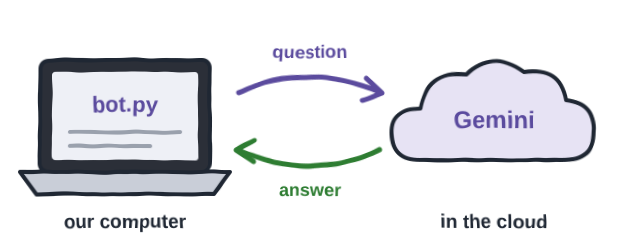
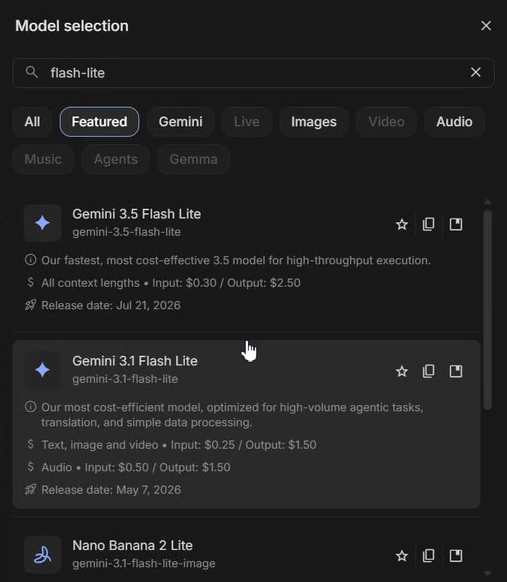
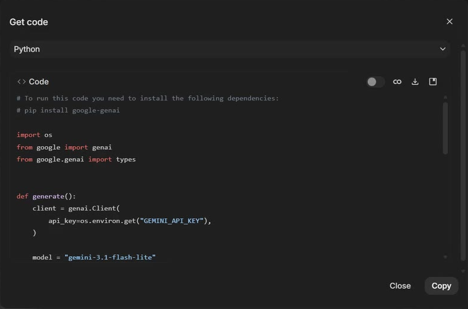
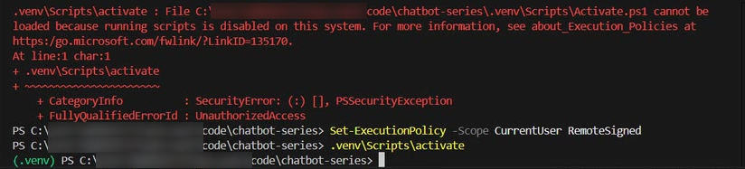
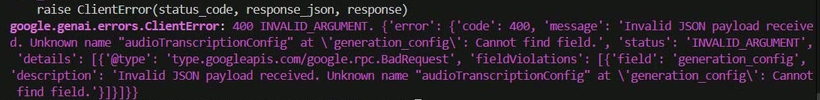
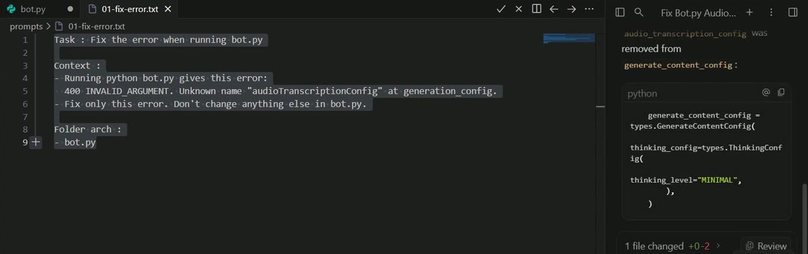
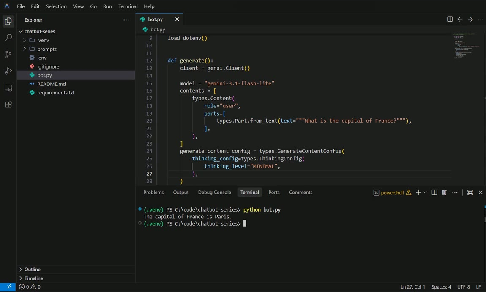

Prefer to watch? This chapter goes with Episode 1 (12:27). Open it on YouTube.
python --version in PowerShell. How To: install Python on Windows. Antigravity, installed and signed in: install Antigravity on Windows. And a Google account, which is free.From the chat page to your own program
Say you ask Gemini a question in the browser. You type, it answers, and the answer stays on that page.
Now you want that answer inside a program of your own. You want to save it, or build a shop assistant around it. The chat page cannot give you that.
How do I talk to Gemini from my own Python code?
Here is what we build. bot.py is a chatbot on your own computer, with Gemini as its engine. Your question goes over the internet to Gemini; the answer comes back to bot.py, and nothing else leaves.

Your program asks through an API, a door Google opens for programs. A key, the API key, tells Google who is asking.
We get there in three steps:
- Take the code from Google AI Studio.
- Run it in Antigravity, Google's editor for AI-assisted coding.
- Let it in with a key of your own.
Pick a model in Google AI Studio
Open Google AI Studio at aistudio.google.com and click Get started. Sign in with your Google account. You land on the Playground.
Your default model may differ from ours. Ours opened on Gemini 4 Hydrogen, with Google Search on. Click the model name at the top right, and search for flash-lite.

Now switch off Grounding with Google Search, so the model answers on its own. Then ask something you can check yourself.
What is the capital of France?
The answer: "The capital of France is Paris." Correct, right?
What one question costs
The prices on those cards are for every 1 million tokens. A token is a small piece of text the model reads or writes. AI Studio counts them next to the chat's title. Hover over the count, and it splits them into input and output, with a cost.
We asked the France question on both models. Then we asked 3.1 for a longer answer: "Explain in about 150 words how a large language model answers a question, for someone who has just learned Python."
| Question, model | Tokens in + out | Cost, input + output |
|---|---|---|
| France, 3.5 Flash Lite | 8 + 7 | $0.000002 + $0.000018 = $0.000020 |
| France, 3.1 Flash Lite | 8 + 7 | $0.000002 + $0.000011 = $0.000013 |
| 150 words, 3.1 Flash Lite | 26 + 195 | $0.000007 + $0.000293 = $0.000299 |
Check the last row yourself. 195 output tokens at $1.50 per million is $0.000293. The question was short; the answer was long.
So the answer drives the cost. On 3.1, an output token costs 6 times an input token: $1.50 against $0.25. That is why the long answer cost more than 20 times our France question.
One more line in the small print: here in AI Studio, with no API key selected, usage is free.
Take the code AI Studio wrote
Go back to the France chat; History on the left keeps it. Click Get code at the top. With Python chosen, AI Studio shows your call as a Python program. Click Copy at the bottom right.

api_key=os.environ.get("GEMINI_API_KEY"): we come back to it.In Antigravity, choose Open Folder. Make a folder anywhere you like; ours is C:\code\chatbot-series. Antigravity asks whether you trust the authors of the files. Say yes: it is your own folder.
Click the New File icon next to the folder name, and name the file bot.py. Paste the code and save it with Ctrl+S.
The question is not in the copied code yet. On its line you find a placeholder, INSERT_INPUT_HERE. We fill it in soon.
A place for this project's libraries
Open a terminal from the menu bar: Terminal, then New Terminal. It opens in your project folder. First, check your Python. Google's library for Gemini needs Python 3.11 or later.
python --version
Ours said Python 3.15.2.
Next, make a virtual environment: a dedicated place for this project's libraries, so they do not mix with other projects. Make it once, then switch it on.
python -m venv .venv .venv\Scripts\activate
On Windows, PowerShell may stop you here with a red error.

One command lets your own scripts run, for your user only. Then switch the environment on again.
Set-ExecutionPolicy -Scope CurrentUser RemoteSigned .venv\Scripts\activate
Every command from here runs inside the environment. Now install Google's library for Gemini, google-genai.
pip install google-genai
A new terminal starts outside the environment. If the prompt does not start with (.venv), run .venv\Scripts\activate first. Otherwise Python may not find the libraries you installed.
A key of your own
Look at line 12 of bot.py: api_key=os.environ.get("GEMINI_API_KEY"). The code expects your key in a setting on your computer, called GEMINI_API_KEY. You have no key yet, so let's make one.
- In AI Studio, click the key icon at the bottom left. API Keys opens. The first time, it is empty.
- Click Create API key, at the top right.
- Name it after the project,
chatbot-series, and create it. - AI Studio shows the key. Click Copy key.
This is the quick way. Our full how-to on getting a Gemini API key goes step by step. AI Studio gives a limited number of free requests, and the limits change from time to time. Check the current Gemini API rate limits.
Your key is like a password. Anyone who has it can use Gemini on your account. In the video you see my key for a moment: it is a throwaway key, and I delete it before the video goes out. Keep your own key to yourself, and never put it in code you share.
For a first test, we put the key straight into bot.py. On line 12, select os.environ.get("GEMINI_API_KEY") and delete it. Type a quote, and paste your key. Line 12 now looks like this, with your key in place of your-key-here:
Then go to line 20. Replace INSERT_INPUT_HERE with your question, and save.
The key stays in the file only until the end of this chapter. Then a prompt moves it out.
It fails first
Now run it.
python bot.py
We did not expect this: it fails, with a screen of red and purple lines. When a program fails, read the last line first.

audioTranscriptionConfig.In plain words: the copied code sends a setting that the server rejects. So what do we do? We don't guess. We write a narrow prompt in a small file.
Make a folder called prompts, and in it a file 01-fix-error.txt. It has the task, the error, and one rule: fix only this error.
Task : Fix the error when running bot.py Context : - Running python bot.py gives this error: 400 INVALID_ARGUMENT. Unknown name "audioTranscriptionConfig" at generation_config. - Fix only this error. Don't change anything else in bot.py. Folder arch : - bot.py
"Fix only this error" keeps the agent from tidying up things you did not ask about.
Select all, copy, and paste it into the agent panel on the right. Send it. The agent explains the cause, and shows its change.

audio_transcription_config removed, 1 file changed +0 -2. Two lines out, nothing else.Click Accept all, and run python bot.py again.
Copied code will not always work. Read the last line of the error, give the agent one narrow prompt, and check what it changed.
More questions, and two problems
Your own code just got its first reply from Gemini. Change the question on line 20, save, and run again. We asked four more:
| Question on line 20 | What our bot answered |
|---|---|
| Who is the President of India? | The current President of India is Droupadi Murmu. She assumed office on July 25, 2022. |
| How many days are there in a leap year? | There are 366 days in a leap year. |
| Translate "thank you" into Hindi. | Dhanyavaad, with how to say it, and 2 other ways: Shukriya, and Bahut-bahut dhanyavaad. |
| Write a one-line poem about the rain. | The clouds dissolve into a thousand silver threads that stitch the sky to the earth. |
Search is off, so a fact like the President can go out of date. Your answers will be worded differently.
Five questions, five answers. Now look at bot.py again.
- Every new question means editing the code.
- Your key sits right in the file. Anyone who sees the file can use it.
The first problem waits for Chapter 2. The second one, we fix now.
Move the key out with a prompt file
We fix it the way we build this whole series: with a prompt saved in a file. In the prompts folder, make 01-api-key.txt. Every prompt has 3 parts:
| Part | What it says in this prompt |
|---|---|
| Task | Move the key out of the code, into a .env file. |
| Context | How: load it with python-dotenv, add .env to .gitignore, keep the model and the question, add nothing new. |
| Folder arch | The files the project should end up with, one line each. |
Task : Move my Gemini API key out of the code, into a .env file Context : - bot.py is the code copied from Google AI Studio. The API key is written directly in bot.py. - Move the key into a .env file as GEMINI_API_KEY and remove it from bot.py. - Use load_dotenv from python-dotenv to load it. - Add .env to .gitignore, so the key never goes to Git. - Keep the model and the question exactly as they are. - Don't add memory, tools, a UI or new features. Folder arch : - bot.py : the chatbot - .env : GEMINI_API_KEY - .gitignore : contains .env and .venv - requirements.txt : the libraries used - README.md : how to set up the virtual environment and run
The .env file is the environment file. It stays on your computer, and .gitignore tells Git never to store it.
Then hand the file to the agent.
Review and implement prompts/01-api-key.txt
It stops before it installs python-dotenv, and again before it writes .env. Choose Yes, allow this time both times, so the choice stays with you.
Read the summary as a checklist
Ours worked for 5 minutes, then wrote a summary. Read it against your prompt:
| File | What the agent did | In Git? |
|---|---|---|
.env | Holds GEMINI_API_KEY, your key | No |
bot.py | Calls load_dotenv(); no key in the client | Yes |
.gitignore | Lists .env and .venv/ | Yes |
requirements.txt | google-genai and python-dotenv | Yes |
README.md | How to set up the environment and run | Yes |
It also ran the bot to test it. Click Accept all, then open the files and read them yourself. A summary is only the agent's word.

load_dotenv() on line 9, genai.Client() with no key on line 13. One more run gives the same answer, Paris. Nothing changed for the bot, but the key is out of the code.Keep your own key in .env, never in code you share. If a key ever ends up somewhere public, delete it in AI Studio's API Keys page and make a new one.
What bot.py still cannot do
Right now, bot.py is a one-question bot. It asks, prints the answer, and exits. To ask anything else, you open the code. And each run spends one call to Gemini on your key.
Chapter 2 takes the question out of the code. You type into a window, and the bot replies. Programmers call that window the frontend, and bot.py behind it the backend. Later chapters grow the pair into an assistant for an electronics shop.
Quick reference
Every command from this chapter. The two prompt files are above, in It fails first and Move the key out.
| Command | What it does | Use it when |
|---|---|---|
python --version | Shows your Python version | Before you start: you need 3.11 or later |
python -m venv .venv | Makes the virtual environment | Once per project |
.venv\Scripts\activate | Switches it on; the prompt starts with (.venv) | In every new terminal |
Set-ExecutionPolicy -Scope CurrentUser RemoteSigned | Lets your own scripts run, for your user only | PowerShell says running scripts is disabled |
pip install google-genai | Installs Google's library for Gemini | Once, inside the environment |
python bot.py | Runs the bot | After every change |
Review and implement prompts/01-api-key.txt | Hands a prompt file to the agent | A prompt file is ready |
The takeaway
- Your program talks to Gemini through the API, and your key tells Google who is asking. Only the question and the answer travel.
- When copied code fails, read the last line of the error. Give the agent one narrow prompt, then check what it changed.
- A key lives in
.env, listed in.gitignore. Never in code you share.
Run the first prompt file on your own machine
The goal: your own bot.py, with your own key safely in .env.
The steps: build bot.py as we did. Give prompts/01-api-key.txt to the agent on your machine. Then put a question of your own on line 20, and run it 3 times.
Guess first: will the 3 answers be the same?
One question for you: what is the first question you would ask a bot of your own?
References
Where each step and number on this page comes from. Everything was also checked in our own recording on 12 and 13 Nov 2026.
- Google · Google AI Studio The model list and its prices, the token count and cost on hover, Get code, and API Keys. https://aistudio.google.com
- Google · Gemini API rate limits The free tier and its current limits. https://ai.google.dev/gemini-api/docs/rate-limits
- Python · venv: creation of virtual environments python -m venv and activating it on Windows. https://docs.python.org/3/library/venv.html
- Microsoft · about_Execution_Policies Why PowerShell says running scripts is disabled, and the CurrentUser RemoteSigned setting. https://learn.microsoft.com/powershell/module/microsoft.powershell.core/about/about_execution_policies
- python-dotenv · the package page load_dotenv reads the .env file into the environment. https://pypi.org/project/python-dotenv/
- My own recording · 12 and 13 Nov 2026, Windows 11 Every picture and answer on this page is from those takes: Python 3.15.2, google-genai 3.2.0, Gemini 3.1 Flash Lite.
New chapters and episodes come out every week. Follow along on YouTube or the WhatsApp channel. Questions? Ask under the video on YouTube; I read every comment.